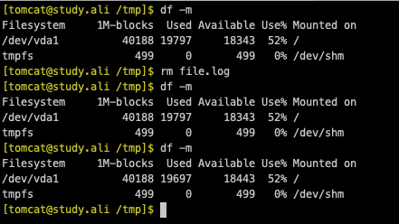
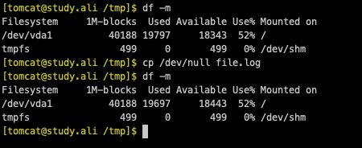

cp /dev/null file.log 不使用rm file.log
的原因：当一个程序占用要删除文件的时候rm只是让文件看不到了，磁盘并没有释放。
使用cp /dev/null file.log会释放磁盘。实验过程如下
删除线上日志文件
使用rm删除文件
新建一个100M大小的文件，并使用less打开
dd if=/dev/zero of=file.log bs=100M count=1
less file.log
新建一个窗口进行实验
先查看了当前磁盘使用情况，磁盘使用了19797M，当执行完rm之后，磁盘还是使用了19797M。因为less命令占用着文件，所以磁盘没有被释放。当less命令退出之后，磁盘使用变回了19697M，正好是文件的大小，文件占用磁盘被释放
使用cp /dev/null file.log删除文件
新建一个100M大小的文件，并使用less打开
dd if=/dev/zero of=file.log bs=100M count=1
less file.log
新建一个窗口进行实验
同上个实验一样先新建了文件，然后查看使用情况。磁盘使用19797M，当执行完cp /dev/null file.log，再次查看磁盘使用了19697M，磁盘已经被释放。 这种场景经常处理线上日志文件，当程序占用着日志文件又不能停止程序时，可以使用cp /dev/null file.log来清理磁盘。